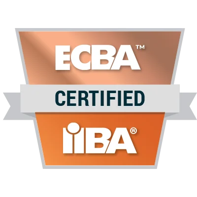

Python & statistical modelling
Data preparation, regression, validation and interpretation of prediction error.
Inspect model evaluation ↗GIFHARI / EXPERTISE
Technical capabilities connected to projects, methods and demonstrable outputs.
These are the capabilities demonstrated in the portfolio. Open a project to see the method, output and evaluation.
Data preparation, regression, validation and interpretation of prediction error.
Inspect model evaluation ↗PostgreSQL-backed exploration and a Python/Airflow ingestion and indexing workflow.
Inspect the EV pipeline ↗Shiny, Plotly, Leaflet and narrative views for exploring environmental data.
Explore the dashboard ↗PySpark transformations, six-hour feature aggregation and Spark ML comparisons.
Read the building-energy study ↗Checks for missingness, unique identifiers, seasonal rules and arithmetic consistency.
Explore the quality audit ↗Student-facing dashboards, habit tracking, reminders, rewards and privacy considerations.
Explore CogniCompass ↗PROFESSIONAL DEVELOPMENT
Currently working towards the following certifications. Images identify the programmes and providers; they do not indicate an awarded credential.
PPSML · Universitas Indonesia
Official source ↗
Power BI Data Analyst Associate
Official source ↗
Entry Certificate in Business Analysis
Official source ↗HackerRank Python (Basic) and SQL (Basic) · May 2024, as listed in my résumé.
Current development priorities: reproducible environments, stronger validation and testing analytical interfaces with users.